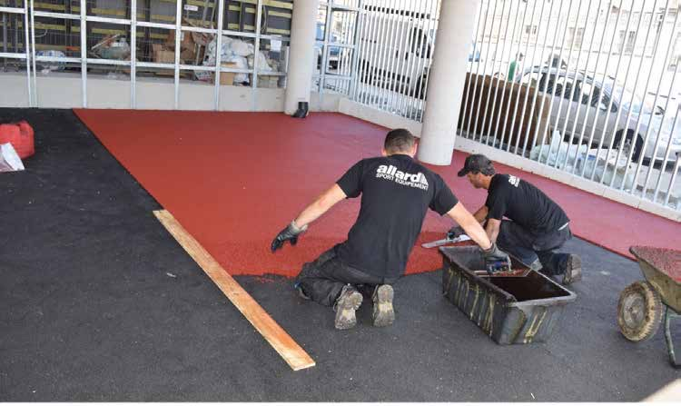
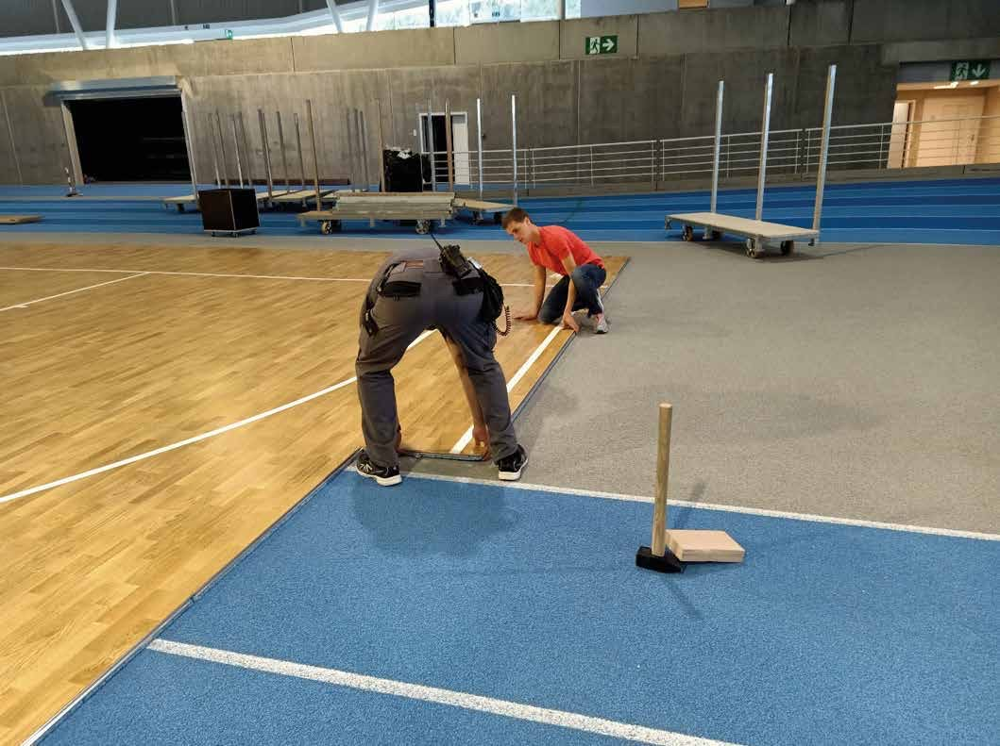
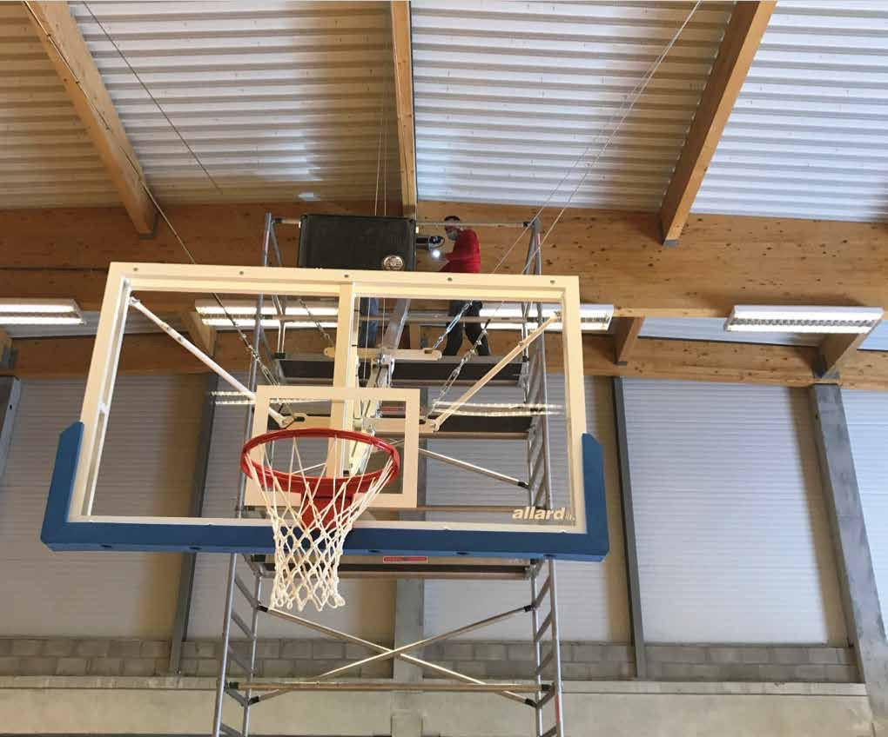
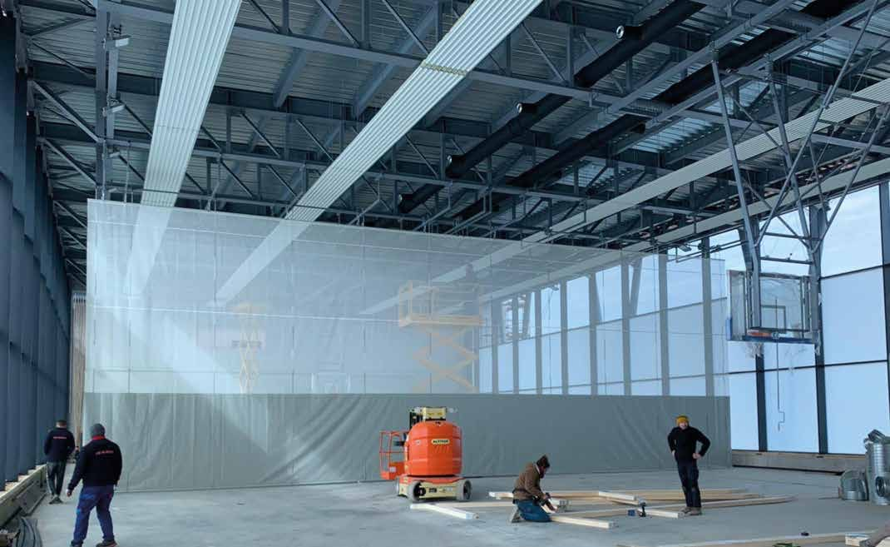
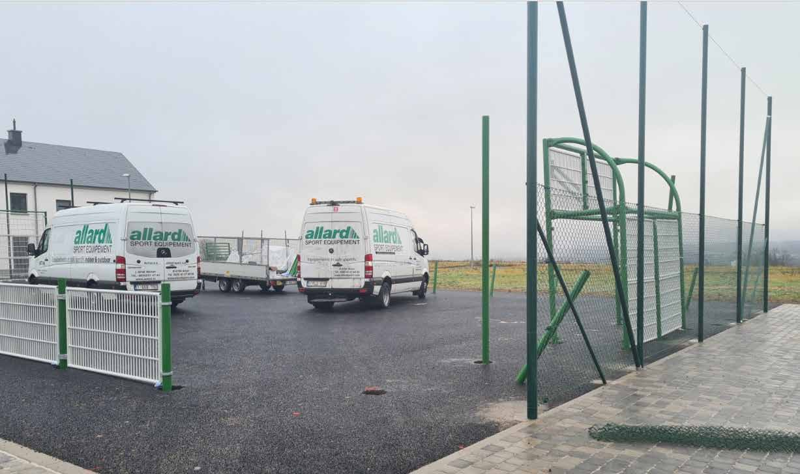

Services
Nous concevons, livrons et installons. Notre équipe pose les sols, trace les terrains, monte les tribunes, les paniers et les murs d'escalade, et rénove ce qui a vieilli.
Fourniture de matériel
Le matériel de nos neuf familles de produits et des marques que nous proposons, pour les professionnels et les particuliers.
Installation et pose
Par notre équipe : tribunes (mobiles, télescopiques motorisées, extérieures, sièges de stade), paniers de basket au plafond, rails d'agrès, espaliers, cloisons et filets de séparation motorisés, protections murales, murs d'escalade, vestiaires et bancs sur mesure, tableaux marquoirs Bodet.
Sols sportifs et traçages
Parquets sportifs (Junckers, Boen), polyuréthane, PVC Gerflor et Tarkett, linoléum, sols de fitness, sols coulés en EPDM, peinture de terrains extérieurs, gazon synthétique, et le traçage des lignes. Comme à l'Andenne Arena, à l'Institut Notre-Dame d'Arlon ou à la salle d'Hélécine (2021).
Terrains extérieurs
Terrains multisports tout métal ou bois et métal, aires de jeux, fitness d'extérieur, street workout, skate park sur demande.
Rénovation et entretien
Remplacement et vitrification de parquets, rénovation de terrains de football et de gazon synthétique, entretien des terrains. Contrats d'entretien [à confirmer].
Étude sur mesure
Étude selon vos besoins (tribunes, aménagement de salle) : implantation, choix des sols et du matériel. Visite sur place [à confirmer].
Livraison
Livraison au rez-de-chaussée, derrière la porte d'entrée. Petit matériel : frais de port ; gros matériel : sur devis. Prix départ usine (conditions générales de vente). Zone et délais [à confirmer].
Garantie
Deux ans pour les particuliers (conditions générales de vente). Garantie professionnelle [à confirmer].
Devis pour les subsides
Devis détaillés pour les dossiers de subside Adeps, prêts à joindre. Délai de réponse [à confirmer].
Sport Service : ce que nous installons.
Le service d'aménagement d'Allard Sport : sols, tribunes, séparations, murs d'escalade, terrains multisports, et la pose qui va avec.
- Sols sportifs intérieurs (parquets, polyuréthane, PVC Gerflor et Tarkett, linoléum)
- Protection de sols, sols fitness, tapis de danse, barres
- Protections murales, de colonnes et de radiateurs
- Rideaux et filets de séparation
- Podiums
- Tribunes mobiles, emboîtables, télescopiques, outdoor, sièges
- Paniers de basket au plafond, rails d'agrès
- Tableaux multisports Bodet
- Murs d'escalade
- Bancs et vestiaires sur mesure, armoires HPL
- Terrains multisports, sols outdoor (peinture, EPDM coulé)
- Skate park, street workout
- Pose, traçage et installation
L'équipe au travail




Quelques installations



Installation d'un terrain multisport : les camionnettes Allard sur le chantier. Photo Allard Sport.
Belgique et Luxembourg, depuis Arlon.
Arlon est à la frontière du Grand-Duché. Nous équipons des communes et des halls en Wallonie et à Bruxelles, et des lycées au Luxembourg, comme à Strassen (2023) et à Gilsdorf (2021).
Au Luxembourg, ces marchés ont été remportés avec un partenaire luxembourgeois [à confirmer]. France proche (Meuse, Moselle, Meurthe-et-Moselle) [à confirmer].
Un subside Adeps demande trois devis. Commencez par le nôtre.
Pour obtenir le subside de la Fédération Wallonie-Bruxelles à l'achat de matériel sportif, un club ou une commune doit joindre trois devis de fournisseurs différents, et ne commander qu'après la confirmation du dépôt du dossier.
Dites-nous que votre demande est pour un dossier Adeps : nous établissons un devis détaillé, matériel par matériel, prêt à joindre. Délai [à confirmer].
Conditions publiées par l'Adeps et relayées par info-lux le 29/10/2026 : lire l'article. Vérifiez les règles en vigueur auprès de l'Adeps.
- Jusqu'à75 % du devis le plus bas, TVA comprise
- Handisport90 % pour le matériel adapté
- Plafond25 000 € par an pour un club affilié, 75 000 € pour les autres demandeurs
Un projet, un devis, une question ?
Appelez-nous ou décrivez votre besoin : nous revenons vers vous avec une proposition chiffrée. Délai de réponse [à confirmer].
+32 63 57 80 85- AdresseZoning de Weyler 28
B-6700 Arlon, Belgique - E-mailinfo@allardsport.com
- HorairesDu lundi au vendredi, de 8 h 30 à 17 h [à confirmer]
- AccueilSur rendez-vous [à confirmer]